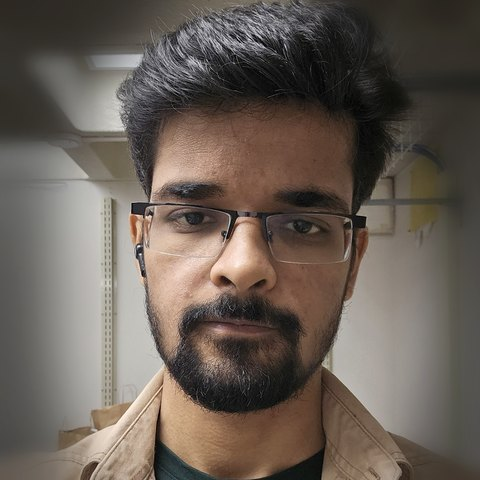

About
Quantum machine learning under real hardware constraints
I am a third-year PhD student in the Department of Informatics and Networked Systems at the University of Pittsburgh, advised by Kaushik P. Seshadreesan. I design probe states and measurements for quantum metrology, and reinforcement-learning controllers for entanglement distribution in quantum networks.

What I work on
I work on one question from two directions: when a quantum device is noisy, finite, and only partly controllable, what is the best thing you can still do with it? For sensing, the answer takes the form of a probe state and a measurement that you optimize rather than derive. For networks, it takes the form of a control policy that decides when to swap entanglement and when to wait. Variational algorithms handle the first, reinforcement learning the second, and hardware constraints are the point rather than an afterthought.
Before Pittsburgh
I did an integrated BS-MS in physics at IISER Bhopal. My thesis with Rohan Singh was on two-dimensional coherent spectroscopy with chirped and unchirped pulses, where I solved the optical Bloch equations numerically and spent real time at an ultrafast bench. Alongside it I built an encoder circuit for a surface code in the measurement-based model with Ankur Raina. Earlier, a summer at IIIT Allahabad with Srijit Bhattacharjee on entanglement entropy in coupled harmonic oscillators is what got me into quantum information in the first place. That mix of stabilizer formalism and optics is why I care whether a protocol survives contact with hardware.
Away from the terminal
Fiction and non-fiction in roughly equal measure, anime that takes its premises seriously, and treks whenever the calendar allows.
Recent
- 2026 · 09Oral presentation at IEEE Quantum Week (QCE) 2026, QTEM track, Toronto. Also serving as student volunteer.
- 2026 · 07Review on AI and quantum information submitted to Progress in Quantum Electronics.
- 2026 · 06Attended QNumerics 2026, Numerical Methods in Quantum Information Science, UMass Amherst.
- 2026 · 05Two preprints out: joint magnetometry and gradiometry, and RL for entanglement swapping.
- 2026 · 03Contributed talk at FQIT 2026, IIIT Allahabad.